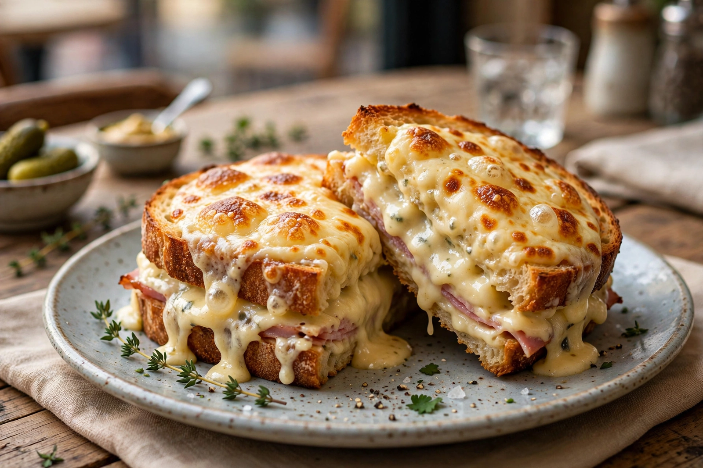

| Croque-monsieur | |
|---|---|
 | |
| Course | Main course, snack |
| Place of origin | France |
| Serving temperature | Hot |
| Main ingredients | Bread, ham, cheese (typically Gruyère or Emmental), béchamel sauce |
A croque-monsieur (French pronunciation: [kʁɔk məsjø]) is a hot sandwich made with ham and cheese. The dish originated in French cafés and bars as a quick snack and first appeared on a Parisian café menu in 1910; it is famously mentioned in Marcel Proust's In Search of Lost Time (1918). The name comes from the verb croquer ("to crunch") and the word monsieur ("mister").
The traditional croque-monsieur is made with baked or boiled ham and sliced cheese — typically Gruyère or Emmental — between slices of brioche-like pain de mie, topped with grated cheese and a layer of béchamel sauce, then heated so the cheese melts and forms a crust. It may be baked in an oven, fried in a pan, or cooked in a sandwich press.
A croque-monsieur served with a poached or lightly fried egg on top is known as a croque-madame, the egg said to resemble a woman's hat. Other variants include the croque provençal (with tomato), croque auvergnat (with blue cheese), croque norvégien (with smoked salmon) and the Hawaiian-style croque with pineapple. Similar toasted ham-and-cheese sandwiches appear in many cuisines, such as the Dutch tosti and the Portuguese francesinha.